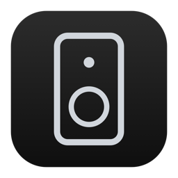

Your older speakers still sound great.
Legacy Remote is a fast, private remote for speaker systems running S1 software. It talks straight to your speakers on your Wi-Fi. No account, no cloud, no tracking.
What it does
- Every room at a glance with what's playing and album art. Play, pause, skip, volume and grouping. Free
- Your Mac's music library, organized by artist, album and song, with search. Plays on any room.
- Favorites, playlists, radio, TV and line-in, plus full queue control.
- Room settings: EQ, night sound, speech enhancement, sub and surround levels.
- Alarms, sleep timer, stereo pairs and surround setup for speakers already on your system.
- Lock screen, Control Center and volume buttons control the room you picked.
Room control is free. A one-time in-app unlock adds everything else.
Support
The app can't find my speakers
Your phone must be on the same Wi-Fi as the speakers. Allow Local Network access in Settings › Privacy & Security › Local Network. Older S1 speakers only join 2.4 GHz Wi-Fi, so a phone on a separate 5 GHz network may not see them.
Which speakers work?
Any system running S1 software on your home network. Systems that use the newer S2 software need the manufacturer's current app.
Can I add a brand-new speaker or sign in to a streaming service?
Not yet. Set those up once in the manufacturer's app; anything already on your speakers, including favorites from streaming services, plays here.
Playing music from my Mac
The Mac companion app shares your music folders with your speakers. Keep it open and the Mac awake while that music plays.
I have an unlock code
Open Settings › Unlock Everything and paste the code from your receipt email. One code works on up to five devices.
Anything else: lotboyjewelry@gmail.com